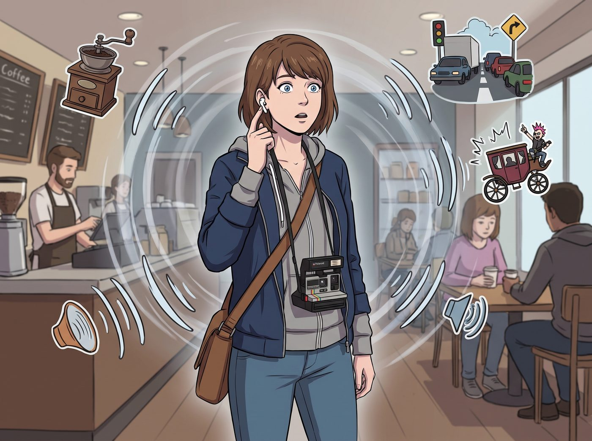

數位結界

對於一個堅持使用寶麗來底片相機、聽卡帶隨身聽、渾身散發著「千禧年復古文青」氣息的 Max Caulfield 來說，向蘋果生態系低頭，原本是一種對自身美學的背叛。
直到她第一次把 AirPods Pro 塞進耳朵，並長按耳機柄，開啟了主動降噪模式。
那一瞬間，西雅圖街頭的車水馬龍、咖啡館裡的磨豆機噪音、以及二號車廂裡 Chloe 震耳欲聾的龐克搖滾，全部被物理學的魔法抽離。整個世界彷彿被按下了靜音鍵，只剩下她自己的呼吸聲。
對 Max 這個極度需要個人空間、靠著相機鏡頭與世界保持安全距離的內向者來說，這根本不是一副耳機，這是數位時代資本主義為內向者發明的最強物理結界。
一、降噪模式：內向者的絕對防禦
擁有 AirPods Pro 之後的 Max，生存狀態發生了肉眼可見的變化。
以前在輕軌上遇到怪人搭話，她還得尷尬地微笑點頭；現在，她只需要面無表情地指了指耳朵裡的白色小塞子，對方就會識趣地閉嘴。這兩顆小小的塑膠，成了現代社會公認的「請勿打擾」免死金牌。
有一天下午，Chloe 在車廂裡為了一顆生鏽的螺絲釘跟 Victoria 吵得不可開交，兩人甚至開始互相扔抱枕。而坐在沙發正中央的 Max，戴著耳機，端著熱茶，平靜地翻著一本攝影集。她甚至連頭都沒抬，彷彿周圍發生的不是第三次世界大戰，而是一部默片。
「Maxine！妳到底有沒有在聽我說話！」Chloe 氣急敗壞地扯下 Max 的一邊耳機。
「世界真和平，對吧？」Max 溫柔地把耳機重新塞回去，再次將自己鎖進了無聲的真空艙。
「這簡直是資本主義的墮落！」Chloe 對著重新進入禪定狀態的 Max 怒吼，「妳這個被矽谷消費主義洗腦的叛徒！還我那個會陪我一起聽黑膠唱片的 Max！」
二、階級鄙視鏈與合規審查
Victoria 看到 Max 終於換掉了那副纏滿線的舊耳機，冷冷地哼了一聲：「歡迎來到二十一世紀，Caulfield。不過妳居然沒有給充電盒配一個皮革保護套？這簡直是對它工業設計的侮辱。」
而實習生 Lily，則拿著分貝計，對 Max 的新設備進行了一次嚴格的合規審查：「Max 學姐，您這個選擇非常符合職業安全與健康管理局的聽力保護規範。主動降噪技術能有效過濾掉環境中高於 85 分貝的有害低頻噪音。」
三、通透模式：觀察者的終極黑魔法
如果說降噪模式是防禦，那麼 AirPods Pro 的通透模式，對 Max 這個習慣躲在鏡頭後面的觀察者來說，簡直就是一項合法的超能力。
有了通透模式，耳機會主動收集外界的聲音並放大。這意味著，Max 可以戴著耳機，假裝自己正在沉浸於獨立民謠音樂中，雙眼無神地看著窗外——但實際上，她的聽覺比沒戴耳機時還要敏銳。
她可以完美地「合法竊聽」Victoria 是如何在電話裡跟管家抱怨 Chloe 睡覺打呼；也可以清晰地聽見 Lily 在廚房裡一邊切菜，一邊用極其溫柔的語氣打電話威脅要查封某個偷稅漏稅供應商的帳戶。
沒有人會對一個戴著降噪耳機、看起來正在發呆的文青產生防備。Max 靠著這兩顆白色小塞子，掌握了二號車廂裡所有的八卦與機密。
有一天，Kate 溫柔地走到正在「聽音樂」的 Max 身邊，輕輕拍了拍她的肩膀，遞給她一塊剛出爐的餅乾，然後壓低聲音，用只有她們兩個人能聽見的音量說：「Max，我知道妳開著通透模式哦。下次偷聽 Victoria 抱怨的時候，記得不要笑出聲，妳的肩膀剛才抖得很厲害呢。」
Max 僵住了，默默地接過餅乾，在心裡為小天使那恐怖的洞察力打了個寒顫。
總而言之，對於一個需要隨時捕捉靈感、極度害怕社交內耗、又渴望在安全距離外觀察世界的攝影師來說，AirPods Pro 確實是數位時代資本主義為她量身打造的偉大發明。它甚至比時間倒轉還實用——畢竟，倒轉時間很耗體力，而降噪，只需要按住耳機柄一秒鐘。